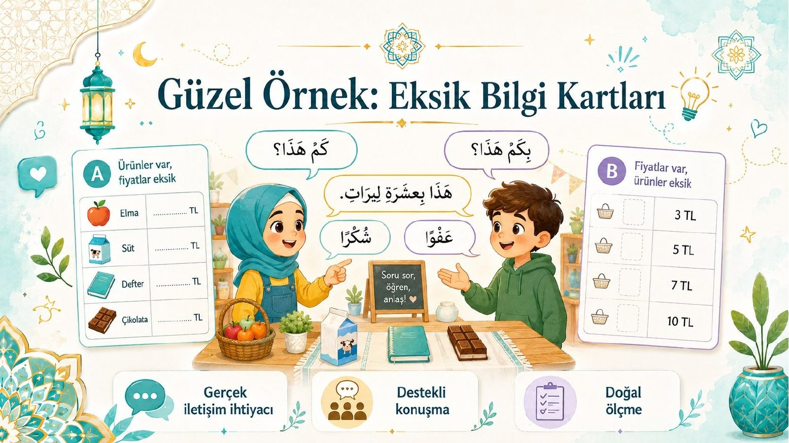

Tersine Mühendislik Odası
Kopya değil, kalıp
Sarf kelimenin kalıbını çıkarır; biz iyi dersin kalıbını çıkaracağız. Önce vakayı yaşayın, sonra röntgenini çekin, reçeteleri alın ve kendi dersinizi sentezleyin.
Adım 1 · Vaka
Eksik Bilgi Kartları
A öğrencisinde ürünler var, fiyatlar yok; B'de tersi. Konuşmak zorundalar — işte “gerçek iletişim ihtiyacı”. Kartlardaki ? işaretlerine tıklayın.
A Kartı ürün var · fiyat yok
| 🍎 تُفَّاحَة (elma) | ? TL |
| 🥛 حَلِيب (süt) | ? TL |
| 📓 دَفْتَر (defter) | ? TL |
| 🍫 شُوكُولَاتَة (çikolata) | ? TL |
B Kartı fiyat var · ürün yok
| ؟ | 3 TL |
| ؟ | 5 TL |
| ؟ | 7 TL |
| ؟ | 10 TL |
— كَمْ هٰذَا؟ — هٰذَا بِثَلَاثِ لِيرَات. — شُكْرًا!
“Bu kaça?” — “Üç lira.” — “Teşekkürler!” · Boşluğu doldurmanın tek yolu: konuşmak.
Fark ettiniz mi? Kimse “konuşma pratiği yapalım” demedi; kart tasarımı konuşmayı zorunlu kıldı. İyi tasarım budur. → İlgili slayt: 32
Adım 2 · Röntgen
Vakayı soyun: neden çalışıyor?
Görsele tıkladıkça bir tasarım ilkesi açılır. Altı ilkenin tamamı = etkinliğin kalıbı.

☢
Röntgeni başlatmak için tıklayın
her tıklama bir ilkeyi açar
0/6 ilke açıldı
Adım 3 · Reçeteler
Üç reçete promptu
İyi örneği yapay zekâya verirken kullanacağınız üç adım: analiz → kalıp → sentez. Kopyalayın, kendi örneğinizle kullanın.
1 · Ana Analiz Promptu örneği röntgene sokar
Sana bir ders etkinliği örneği vereceğim. Bunu KOPYALAMA; tasarım mantığını analiz et. Şu 9 soruya tek tek, maddeler hâlinde cevap ver: 1) Ana öğrenme hedefi ne? 2) Kanca (öğrenciyi yakalayan şey) ne? 3) Aşamalar nasıl ilerliyor? 4) Öğrenci ne zaman dinliyor, ne zaman konuşuyor, ne zaman üretiyor? 5) Öğretmenin kritik hamleleri neler? 6) Hangi destekler (görsel, kalıp cümle, eş çalışması) var? 7) Ölçme kanıtı nerede? 8) Değer ve sosyal-duygusal bağlantı nerede? 9) Bu etkinlikten yeniden kullanılabilir bir öğretim iskeleti çıkar. [ÖRNEK ETKİNLİĞİ BURAYA YAPIŞTIR]
2 · Kalıp Çıkarma Promptu örnekten bağımsız şablon
Az önceki analizden yola çıkarak, bu etkinliğin ÖRNEKTEN BAĞIMSIZ genel ders tasarım kalıbını çıkar. Kalıp şu bölümleri içersin, her bölümün altına "neden var?" gerekçesini yaz: • Dersin kancası • Girdi aşaması (yeni dilin sunulması) • Kontrollü uygulama • Eşli / gruplu üretim (gerçek iletişim ihtiyacıyla) • Değer veya kültür bağlantısı • Farklılaştırma (destek + ileri seviye) • Ölçme kanıtı • Öğretmen yansıması Kalıbı, başka konu ve seviyelere uygulanabilir bir şablon formunda ver.
3 · Sentez Promptu kalıp + senin bağlamın = yeni ders
Şimdi bu kalıbı BENİM bağlamıma uygula ve uygulanabilir bir ders üret: • Ders: Arapça • Sınıf: 7. sınıf (35 öğrenci) • Seviye: A1–A2 • Süre: 40 dakika • Konu: Pazarda alışveriş, fiyat sorma, teşekkür etme • Sınıf gerçekliği: bazı öğrenciler konuşurken çekiniyor • TYMM bağlantısı: konuşma becerisi + saygı ve sorumluluk değeri SINIRLAR: kişisel veri kullanma; kazanım uydurma; etkinlik internetsiz uygulanabilir olsun. ÇIKTI: 5 aşamalı ders akışı (süreleriyle), öğretmen yönergeleri, örnek öğrenci cümleleri, A/B eşli çalışma kartları, farklılaştırma önerileri, basit rubrik ve 3 soruluk çıkış bileti. KONTROL: Emin olmadığın yerde varsayım yazma; bana soru sor.
Meyvesi: Bu üç adımın çıktısı “Pazar Kartları” dersiydi — aynı kalıp, yeni bağlam. → 35. slayt
Adım 4 · Tezgâh
Kendi dersini sentezle
Bağlamınızı girin; üç reçete tek bir sentez promptuna, sizin sınıfınıza göre yazılsın.